Kompaktais variants
1 ierašanās + 4 kalnos + 1 rezervei + 1 mājupceļam. Atsevišķas Taškentas dienas nav; pilsētu apskatām tikai tad, ja rezerve paliek neizmantota.
Četri rīti kalnos. Trīs naktis teltīs.
Piedzīvojums, par kuru runāsim gadiem.
Uzbekistāna ir vairāk nekā Zīda ceļa pilsētas. Pie Taškentas sākas kalni, kuros mēs varam paši izvēlēties tempu un vietu, kur vērot saulrietu.
Akmeņainas grēdas, ielejas, pārejas, augstuma metri un Čimganas masīvs līdz 3309 m.
01Nesam ekipējumu paši. Nav viesnīcu kalnos, nav organizētu tūru un nav piesaistes grafikam.
02Pēc kalniem: uzbeku plovs, Taškenta un — ja laiks atļauj — Samarkanda.
03Tā izskatās brīvība. Plašas ielejas, akmeņainas pārejas, plaši skati uz Čimganu un Charvak pusi. Pieskaries attēlam un ieskaties tuvāk. Attēli rāda dažādus gadalaikus; tie nav septembra apstākļu prognoze.
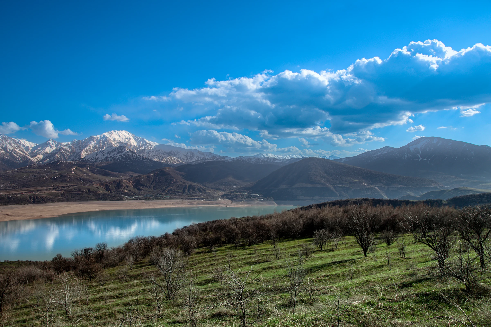
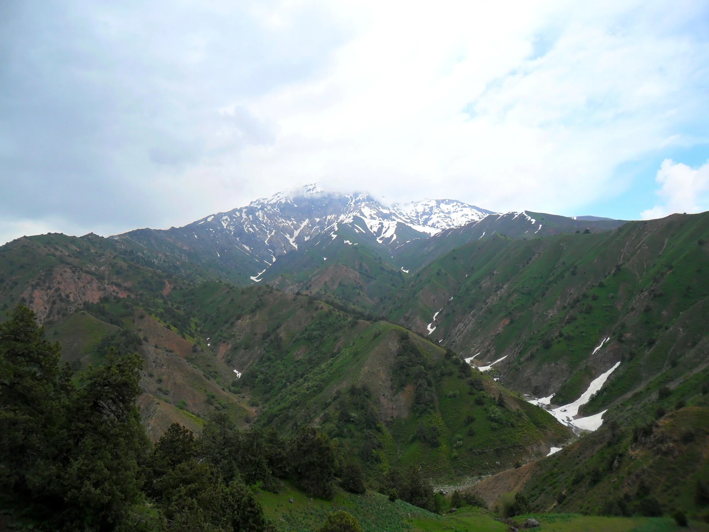
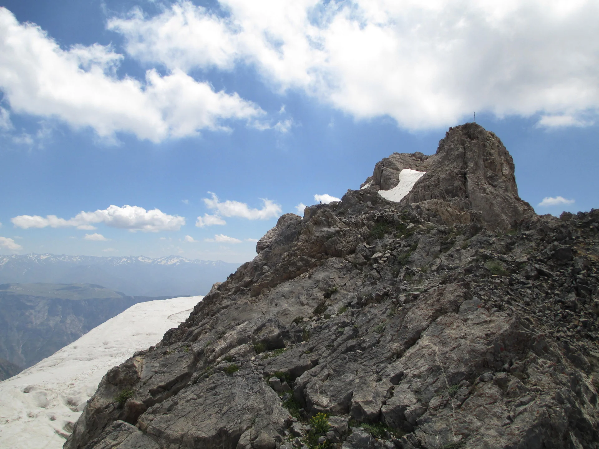
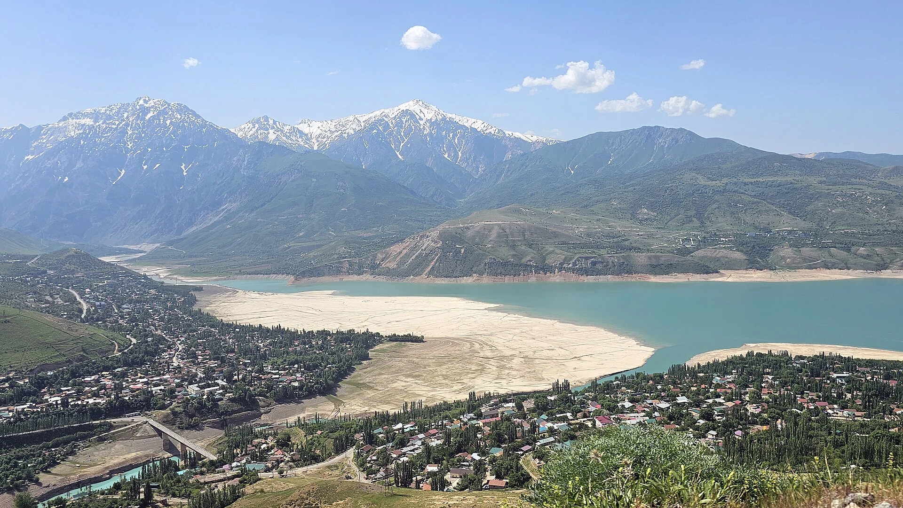
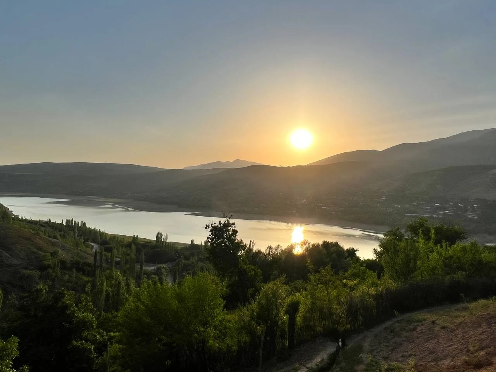
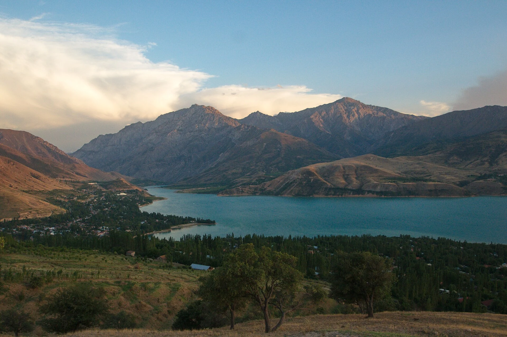
Centrālāzija. Uzbekistānas ziemeļaustrumi. Kalni pie Taškentas — tur sākas mūsu četras dienas ārpus ierastā.
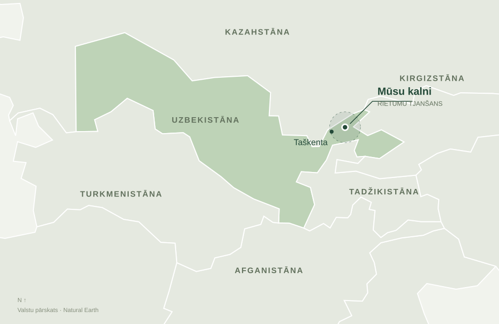
Pārskata karte rāda kalnu apvidus novietojumu Uzbekistānā. Detalizētajai kartei vajadzīgs internets.
© OpenStreetMap · Natural EarthReālas vietas. Vēl plānojams pārgājiens. Iezīmētais aplis rāda vispārīgu pārgājiena apvidu, nevis atļautu teritoriju vai pārbaudītu taku. Nurekata, Kumbel un Aksakata/Gidjal virziena savienojums, transporta finišs, telšu vietas un atļaujas vēl jāapstiprina. Kartes punkti nav nometņu koordinātas.
Četrām dienām kalnos nav vajadzīgs deviņu dienu ceļojums. Mūsu ieteikums: 8 dienas ar rezerves dienu un laiku Taškentai. Tas ir plānošanas variants, kas jāpielāgo faktiskajiem lidojumiem.
8 dienu piemērs: 2027. gada 4.–11. septembris. Sākotnējais 4.–12. septembra logs paliek 9 dienu izvēlei. Biļetes un precīzs lidojumu grafiks vēl nav apstiprināti.
Rīga → Taškenta. Pārtika, degviela un sagatavošanās. Vajadzīga ierašanās, kas atstāj tam pietiekami daudz laika.
Beldersay, Nurekata un Kumbel apkārtne. 3 naktis savās teltīs.
Paturam laikapstākļiem vai aizkavētam finišam. Ja kalnu posms izdodas laikā, atpūšamies pilsētā.
10. septembrī pilsēta; 11. septembrī mājupceļš, ja to ļauj izvēlētie lidojumi.
Taškentas septembris vēsturiski ir silts un salīdzinoši sauss. Kalnu dienām un telšu naktīm plānojam atsevišķi: temperatūru, vēju un nokrišņus nosaka arī augstums un konkrētā vieta.
Nokrišņi: vidēji 4,5 mm mēnesī un aptuveni 3 nokrišņu dienas. Tā ir mēneša klimatoloģija; atsevišķa nedēļa var būt vēsāka, karstāka vai lietaināka.
Avots: WMO WWIS / Uzhydromet. Publicētajiem datiem vidējošanas periods nav norādīts.
Augstāk ir vēsāks, uz atklātām korēm vējš pastiprina aukstuma sajūtu. Kalnu laikapstākļi var mainīties strauji; lietus, migla un slikta redzamība ietekmē gājiena plānu.
Princips: Met Office kalnu laikapstākļu skaidrojums. Tas nav Čimganas septembra mērījumu avots.
Klikšķini uz dienām un paskaties, kā varētu izskatīties mūsu kalnu posms ar trim naktīm teltīs.
Sākam ar pilnām mugursomām, pārejām un skatiem pāri ielejai. Vakarā meklējam iepriekš apstiprinātu nometnes vietu.
“Kurš vakar teica, ka šis būs viegls pārgājiens?”
Uzvārām kafiju, savācam telti un ejam, kamēr kalnos vēl vēss.
Pārejas, panorāmas un obligātā fotografēšanās uz katra otrā akmens.
Vakariņas pie degļa, tumšas debesis, un pārsteidzoši agra gulētiešana.
Karsta duša, plovs un diena bez mugursomas. Taškentai atstājam laiku arī mūsu 8 dienu variantā — balta marmora mošejām, zilām mozaīkām, iespaidīgam metro un Chorsu tirgus garšām.
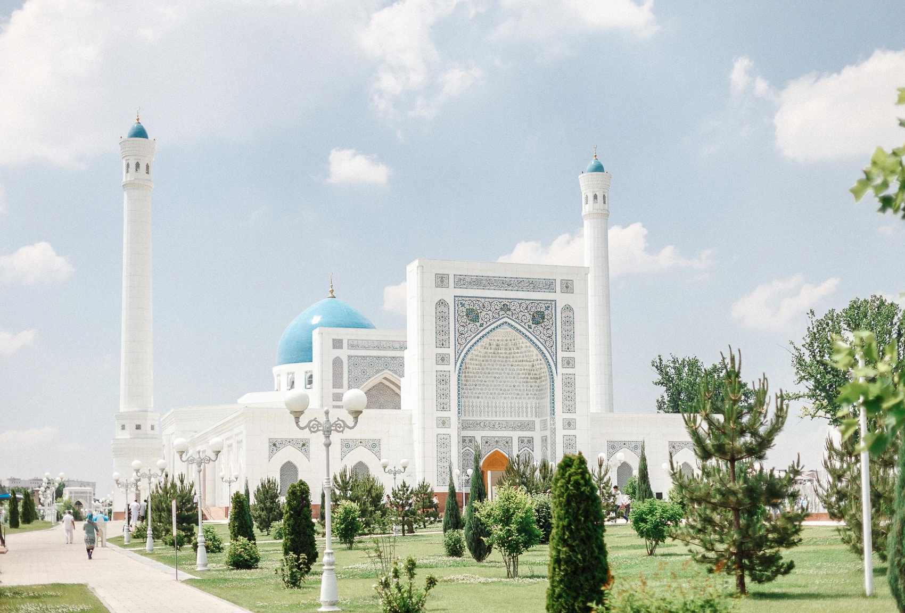
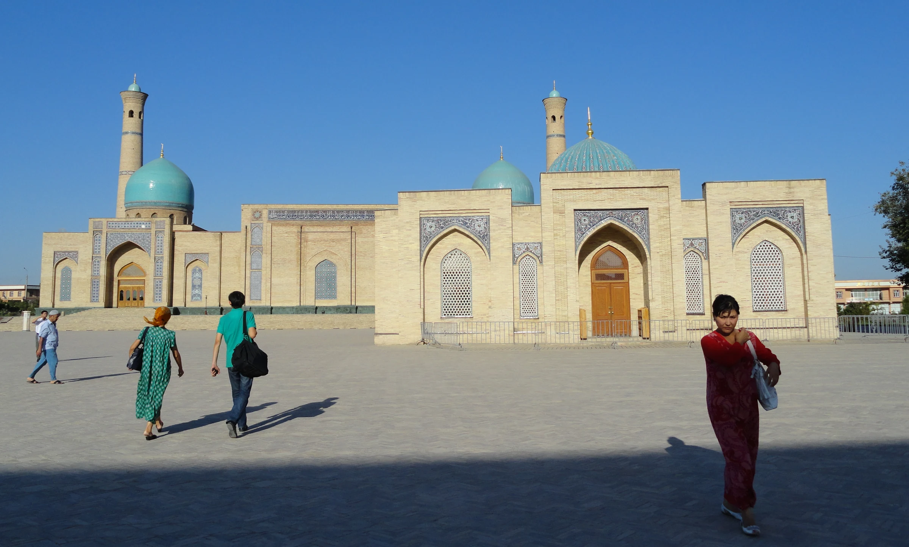
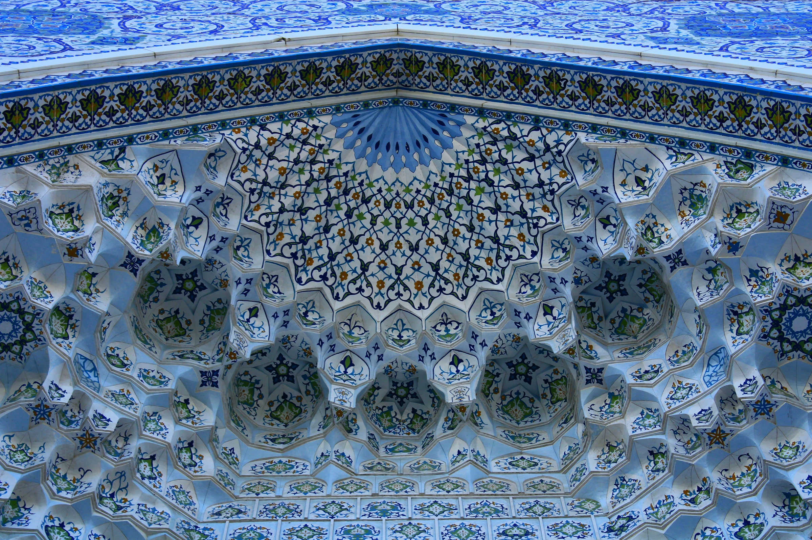
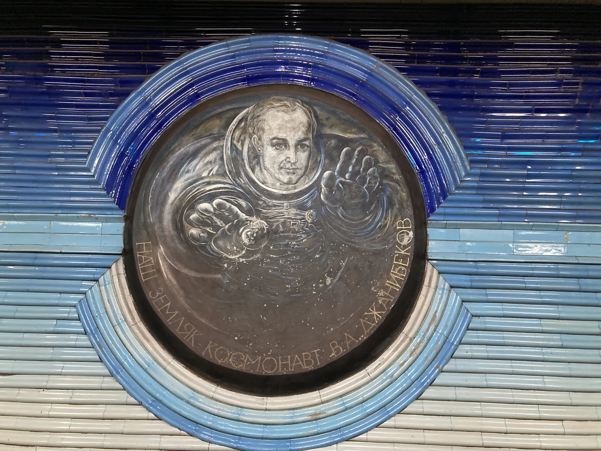
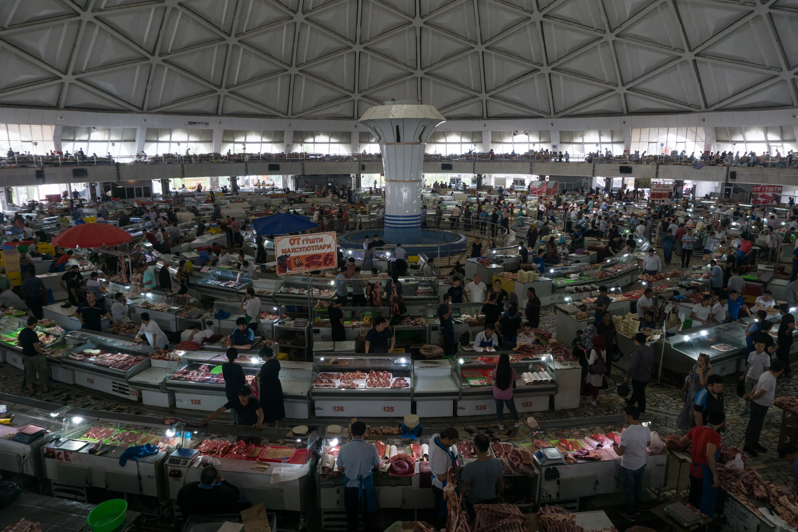
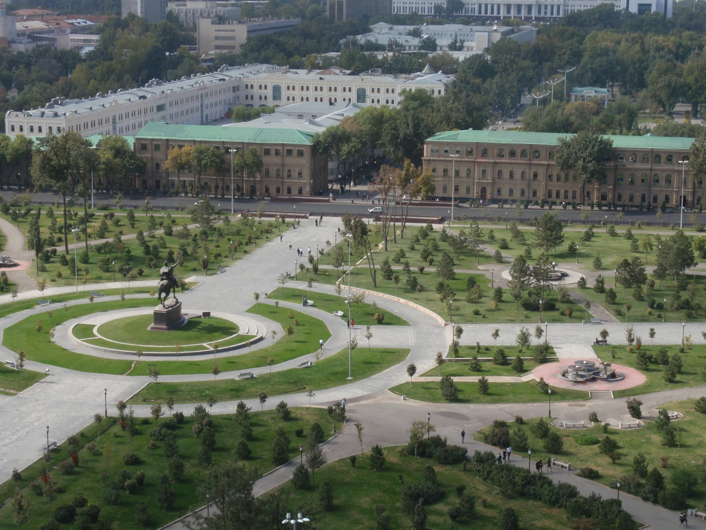
Īstas Taškentas fotogrāfijas no Wikimedia Commons. Atver attēlu pilnekrānā, lai redzētu detaļas, autoru un licenci.
Pabīdi slīdņus — summa uzreiz pārrēķināsies. Bez gida un bez jauna aprīkojuma iegādes.
Ekrānattēlā redzamā kopējā biļetes cena vienam pieaugušajam. Zemāk — attēlā izvērstais atpakaļceļš 11. septembrī.
Kopā atpakaļceļā: 9 h 35 min. Visi laiki ir vietējie. No Taškentas jāizbrauc uz lidostu jau naktī no 10. uz 11. septembri.
Avots: lietotāja iesūtīts ekrānattēls. Gads un turpceļa datumi attēlā nav redzami. Pirms pirkuma jāpārbauda abi virzieni, bagāža, pārsēšanās nosacījumi un pieejamība 7 cilvēkiem; cena var mainīties.
Airbnb lapā pārbaudītais piemērs: 7 viesi · 2027. gada 5.–8. septembris.
Aptuveni 14,43 € cilvēkam par nakti, sadalot redzamo 303 € kopējo cenu uz 7 cilvēkiem un 3 naktīm. Sludinājumā norādīta visa dzīvokļa lietošana un virtuve.
Pārbaudīts 2026. gada 17. oktobrī. Galīgo cenu, viesu sastāvu, guļvietas un noteikumus atkārtoti pārbaudām Airbnb. Budžeta kalkulatora pilsētas izmaksas paliek aptuvena tāme, nevis šīs naktsmītnes rezervācija.
Šis 5.–8. septembra dzīvokļa piemērs pārklājas ar mūsu plānoto 5.–8. septembra pārgājienu un trim telšu naktīm. Paturam šo vietu kā kandidātu pirms vai pēc kalniem; citiem datumiem cena un pieejamība jāpārbauda no jauna.
Transfēra pieņēmums: 300 € visai grupai; naktsmītnes/pilsētas ēdieni 90 €, apdrošināšana/rezerve 55 €, pārējais 35 € katram.
Tā ir plānošanas tāme, nevis aktuāls aviobiļešu piedāvājums. Rezervējiet papildu neparedzētu izdevumu rezervi.
Atzīmē, kas jau ir. Pārlūkā saglabāsim šos ķeksīšus šajā ierīcē.
Pieredzējušai grupai vajadzēs arī bezsaistes kartes, rezerves navigāciju, ārkārtas sakarus un laikapstākļiem atbilstošu siltumu. Degvielu pērciet uz vietas.
Bez gida — jā. Bez plāna — nē. Pirms rezervējam biļetes, šiem jautājumiem jābūt atrisinātiem.
Iepriekšējie pārgājienu ieraksti pierāda, ka šajā reģionā cilvēki staigā ar teltīm, bet tas nepierāda, ka mūsu konkrētais 4 dienu savienojums ir drošs vai visur atļauts.
Latvijas ĀM ceļojumu informācija ↗Skatīt publiskos GPS ierakstus ↗Mūsu variants ir idejas prezentācija, nevis solījums, ka varam šodien doties bez papildu pārbaudes.
Izvēlies savu atbildi. Pēc tam nokopē uzaicinājumu un iemet čatā.
Balsojums ir jautram efektam tikai šajā pārlūkā — draugu atbildes automātiski netiek apkopotas.
Attālumi, nakšņošanas punkti, septembra datumi un izmaksas ir provizoriski. Lapa nav GPS navigācijas rīks. Fotogrāfijas ilustrē reģionu dažādos gadalaikos. Autori, oriģinālie avoti un licences norādīti zemāk un pie katra foto pilnekrāna skatā.
Foto samazināti, pārveidoti WebP formātā un attēloti ar izgriešanu un tumšinošiem pārklājumiem. Atvasinātie foto saglabā katra oriģināla licenci. Pilni attēlu dati un licences ↗. CC BY-SA 3.0 / 4.0 fotogrāfijas atbilstoši šo licenču noteikumiem.